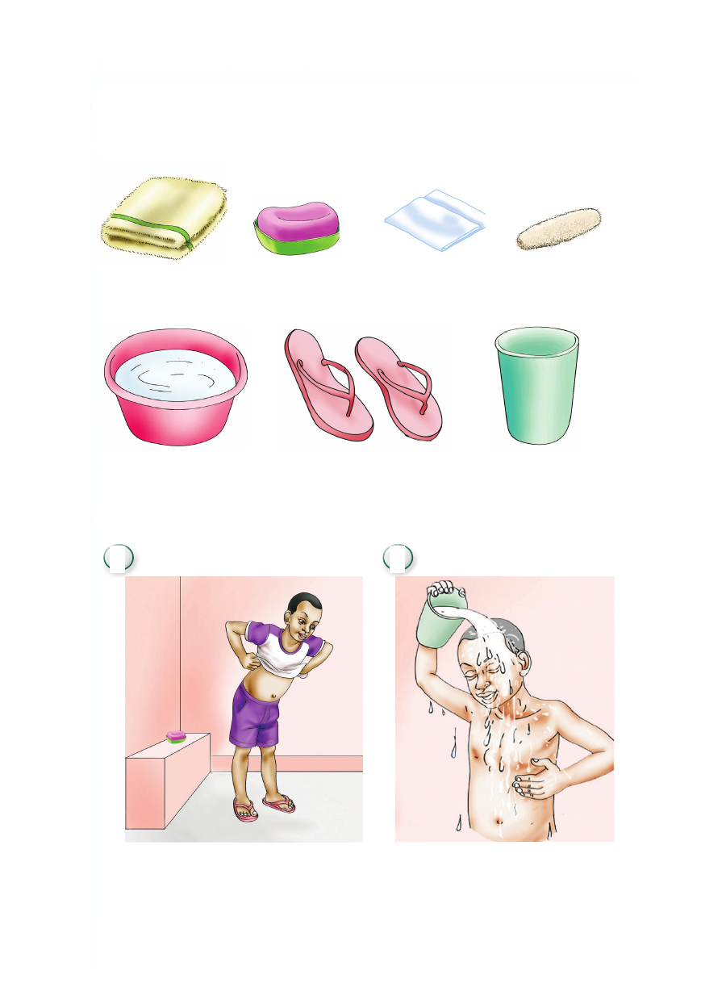

Kuoga
Vifaa vya kuogea
taulo sabuni kitambaa dodoki
beseni kandambili kopo
Hatua za kuoga
1 2
Kuvua nguo Kujimwagia maji
Kuoga Vifaa vya kuogea taulo sabuni kitambaa dodoki beseni kandambili kopo Hatua za kuoga 1 2 Kuvua nguo Kujimwagia maji